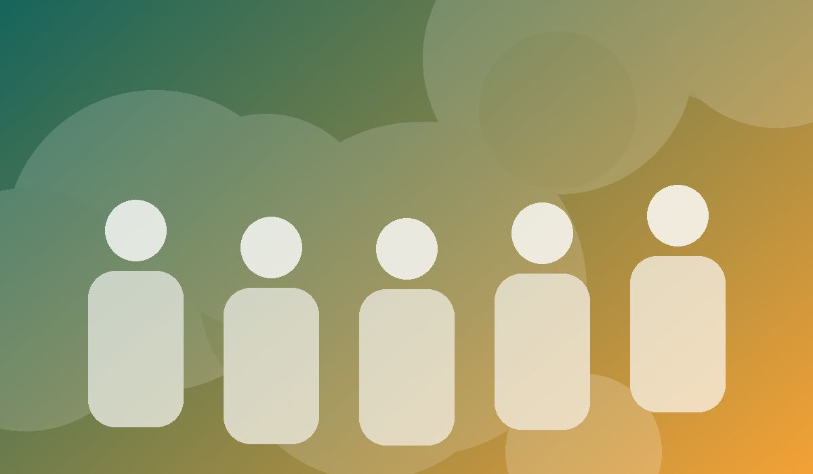
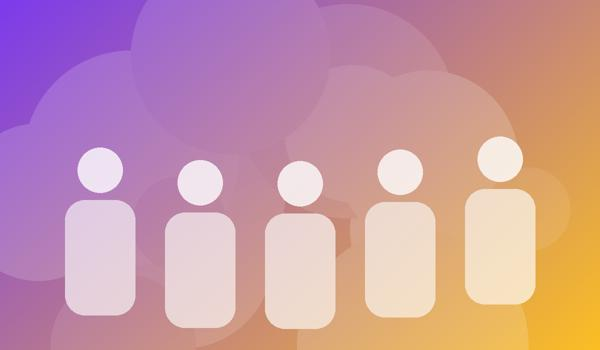

Gestão
Diretoria executiva
Define estratégia e presta contas à assembleia de associados.
Há 15 anos a Mãos Unidas leva educação, saúde e cuidado ambiental a comunidades em situação de vulnerabilidade.

A Mãos Unidas é uma organização sem fins lucrativos fundada em 2010. Atuamos com transparência, participação comunitária e foco em resultados mensuráveis.
Promover o desenvolvimento humano e social por meio de projetos educativos, de saúde e ambientais.
Ser referência nacional em impacto social com participação de voluntários e doadores.
Ética, transparência, empatia, cooperação e respeito à diversidade.
12 milpessoas atendidas
350voluntários ativos
28projetos concluídos
96%dos recursos aplicados em projetos
Define estratégia e presta contas à assembleia de associados.
Planeja, acompanha indicadores e gerencia as equipes de campo.
Audita balanços e publica relatórios de transparência anuais.
Rua da Esperança, 123 – Centro
Fortaleza – CE, 60000-000
Telefone: (85) 3333-4444
E-mail: contato@maosunidas.org
Atendimento: segunda a sexta, das 8h às 17h.
